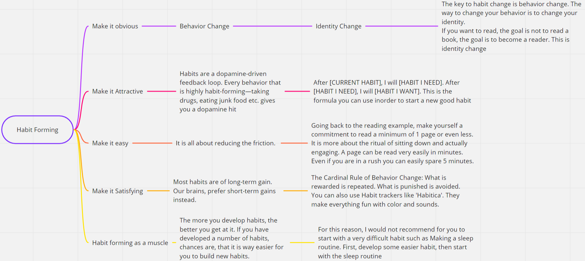

What is a habit?
- A habit is a routine or behavior that is performed regularly and, in many cases, automatically.
- You don't have to make a conscious effort to perform a habit. It is just what you do. it is done in "AutoPilot mode".
- Here is a simple flowchart that demonstrates the principles of Habit Formation

Please read through this
Steps to develop a reading habit
This checklist can be easily moulded for any habit that you want.
If you would like to learn more about Habit Formation, you should check out Atomic Habits by James Clear.
If you face any issues in forming habits or think that I missed something, feel free to comment and inform me. I will make sure to help you out.